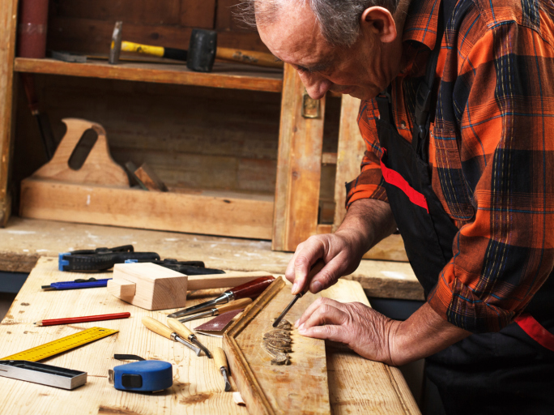
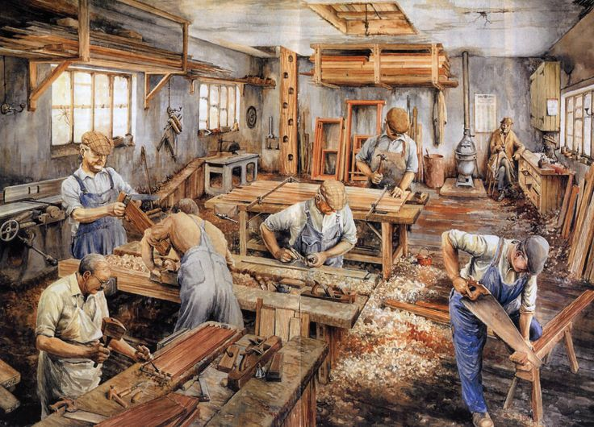
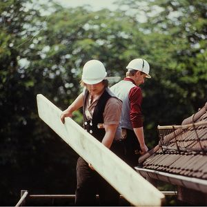
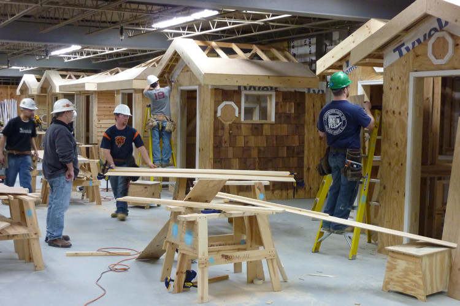
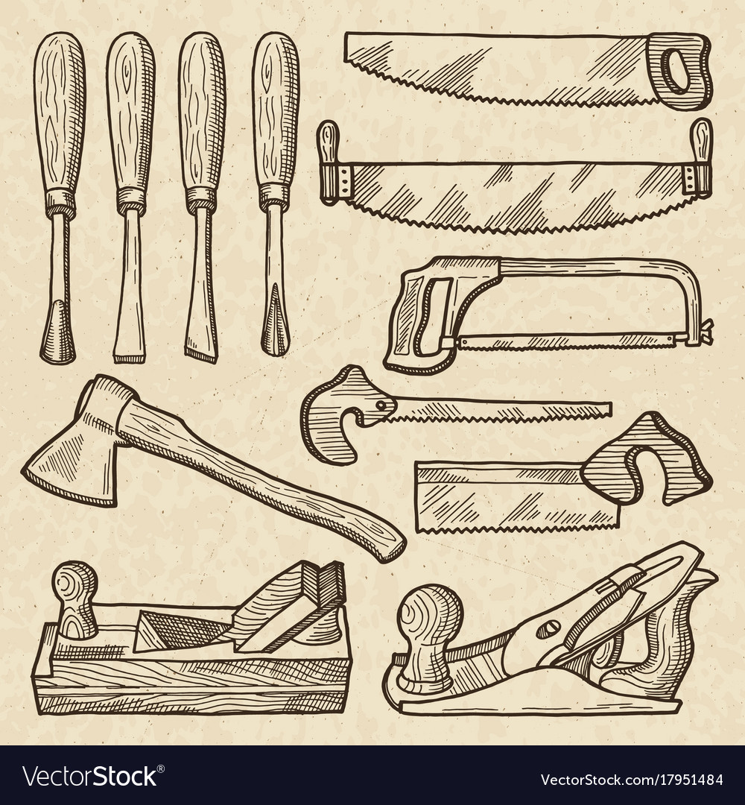

CARPENTRY
Carpentry is a skilled trade in which the primary work performed is the cutting, shaping and installation of building materials.
Carpentry is the art of combining pieces of lumber to support weight or resist pressure. Lumber is the timber sawed into boards, planks or other structural members os standard or specified lenght. Timber is the wood of trees cut and prepared for use as building material.

Carpenters traditionally worked with natural wood and did the rougher work such as framing, but today many other materials are also used and sometimes the finer trades of cabinetmaking and furniture building are considered carpentry.Carpentry in the United States is almost always done by men. With 98.5% of carpenters being male, it was the fourth most male-dominated occupation in the country in 1999, and there were about 1.5 million positions in 2006.
HISTORY OF CARPENTRY
Wood is one of mankind's oldest building materials.

The ability to shape wood improved with technological advances from the stone age to the bronze age to the iron age. Some of the oldest archaeological evidence of carpentry are water well casings built using split oak timbers with mortise and tenon and notched corners excavated in eastern Germany dating from about 7,000 years ago in the early neolithic period.
Relatively little information about carpentry is available from pre-history (before written language) or even recent centuries because the knowledge and skills were passed down person to person, rarely in writing, until the printing press was invented in the 15th century and builders began regularly publishing guides and pattern books in the 18th and 19th centuries. The oldest surviving, complete architectural text is Vitruvius' ten books collectively titled De architectura which discusses some carpentry.
Some of the oldest, surviving, wooden buildings in the world are the temples in China such as the Nanchan Temple built in the year 782, the Greensted Church parts of which are from the 11th century, the stave churchs in Norway from the 12th and 13th centuries.
TRAINING
Carpentry requires training which involves both acquiring knowledge and physical practice.

In formal training a carpenter begins as an apprentice, then becomes a journeyman, and with enough experience and competency can eventually attain the status of a master carpenter. Today pre-apprenticeship training may be gained through non-union vocational programs such as high school shop classes and community colleges.
Informally a laborer may simply work alongside carpenters for years learning skills by observation and peripheral assistance. While such an individual may obtain journeyman status by paying the union entry fee and obtaining a journeyman's card (which provides the right to work on a union carpentry crew) the carpenter foreman will, by necessity, dismiss any worker who presents the card but does not demonstrate the expected skill level.
Carpenters may work for an employer or be self-employed. No matter what kind of training a carpenter has had, some U. S. states require contractors to be licensed which requires passing a written test and having minimum levels of insurance.
CARPENTRY SCHOOLS AND PROGRAMS
Formal training in the carpentry trade is available in seminars, certificate programs, high school programs, online classes, associate degree programs, and advanced college degrees in the new construction, restoration, and preservation carpentry fields. Sometimes these programs are called pre-apprenticeship training.
In the modern British construction industry, carpenters are trained through apprenticeship schemes where general certificate of secondary educations (GCSE) in Mathematics, English, and Technology help but are not essential. However, this is deemed the preferred route, as young people can earn and gain field experience whilst training towards a nationally recognized qualification.

There are two main divisions of training: construction-carpentry and cabinetmaking. During pre-apprenticeship, trainees in each of these divisions spend 30 hours a week for 12 weeks in classrooms and indoor workshops learning mathematics, trade terminology, and skill in the use of hand and power tools. Construction-carpentry trainees also participate in calisthenics to prepare for the physical aspect of the work.
Upon completion of pre-apprenticeship, trainees who have successfully passed the graded curriculum (taught by highly experienced journeyman carpenters) are assigned to a local union and to union carpentry crews at work on construction sites or in cabinet shops as First Year Apprentices. Over the next four years, as they progress in status to Second Year, Third Year, and Fourth Year Apprentice, apprentices periodically return to the training facility every three months for a week of more detailed training in specific aspects of the trade.
MATERIALS USED
Carpenters traditionally worked with natural wood which has been prepared by splitting (riving), hewing, or sawing with a pit saw or sawmill called lumber (American English) or timber (British English). Today natural and engineered lumber and many other building materials carpenters may use are typically prepared by others and delivered to the job site. In 2013 the carpenters union in America used the term carpenter for a catch-all position. Tasks performed by union carpenters include installing:

- Flooring
- Windows
- Doors
- Interior trim
- Cabinetry
- Solid Surface
- Insulation
- Metal Framing
- Acoustical ceilings
- Office furniture system
CARPENTER'S HALL
 Carpenters' Hall is the official birthplace of the Commonwealth of Pennsylvania and a key meeting place in the early history of the United States. It is in Independence National Historical Park in Philadelphia, Pennsylvania.
Carpenters' Hall is the official birthplace of the Commonwealth of Pennsylvania and a key meeting place in the early history of the United States. It is in Independence National Historical Park in Philadelphia, Pennsylvania.
Completed in 1775, the two-story brick meeting hall was built for and still privately owned by the Carpenters' Company of the City and County of Philadelphia, the country's oldest extant craft guild. The First Continental Congress met here in 1774 and it was the location of the Pennsylvania Provincial Conference in June 1776.
The site was designated a National Historic Landmark on April 15, 1970. On November 30, 1982, the Pennsylvania Historical and Museum Commission succeeded in passing Pennsylvania General Assembly 166(R) HR180 to recognize "Carpenters' Hall as the official birthplace of the Commonwealth of Pennsylvania".